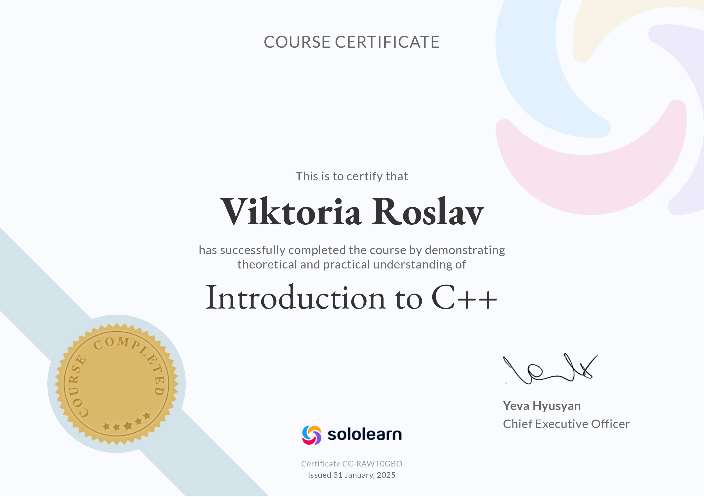

Programming for Everybody: Python Basics
Mastered the basic syntax of Python, including variables, loops, functions, and logical operators. Acquired fundamental skills in writing clean and logical code. This solid foundation empowered me to start building my own automated scripts and applications from scratch.


Python: Data Structures
In-depth study of data organization and processing in Python. Mastered working with lists, dictionaries, tuples, and the file system to effectively solve complex algorithmic problems. Understanding these core concepts allowed me to significantly optimize my backend code and handle complex data efficiently.
Around Distance Learning in 10 Hours
Studied modern methodologies and digital tools for effective remote interaction. This course helped deepen my professional English knowledge in the context of online communication. This experience greatly enhanced my time-management skills and my ability to collaborate effectively in remote development teams.


AI: How to Increase Profit and Optimize Business
Explored practical scenarios of using Artificial Intelligence for process automation. Studied AI tools for data analysis, decision-making, and improving project efficiency. This knowledge directly inspired my current focus on developing smart RAG assistants that solve real-world problems.
CS50: Introduction to Cybersecurity (Harvard)
Studied the fundamental principles of cybersecurity and data protection. Covered topics like cryptography, web application security, threat analysis, and writing secure code. Thanks to this training, I now consistently apply secure coding practices to protect my applications from common vulnerabilities.


C++ Certification
Advanced practical application of complex algorithms and object-oriented programming principles to solve mathematical and technical problems. This rigorous training deepened my understanding of memory management and system-level architecture, making me a much stronger software engineer.